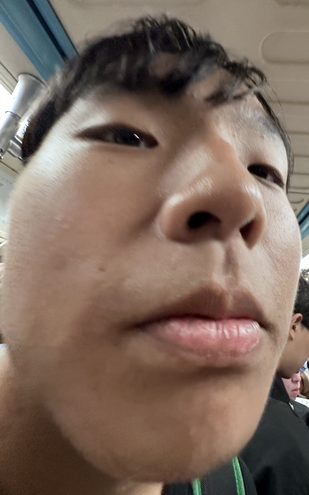

泫丞教你把故事說的很67。
每個人心裡都有一段故事。
有些故事關於青春，有些關於遺憾，更有些關於我們的岳承；
有些藏在夏天的晚風裡，有些則停留在再也回不去的回憶。
點下「開始閱讀」，走進別人的故事，也許你會在某一句話裡，看見自己。

每個人心裡都有一段故事。
有些故事關於青春，有些關於遺憾，更有些關於我們的岳承；
有些藏在夏天的晚風裡，有些則停留在再也回不去的回憶。
點下「開始閱讀」，走進別人的故事，也許你會在某一句話裡，看見自己。